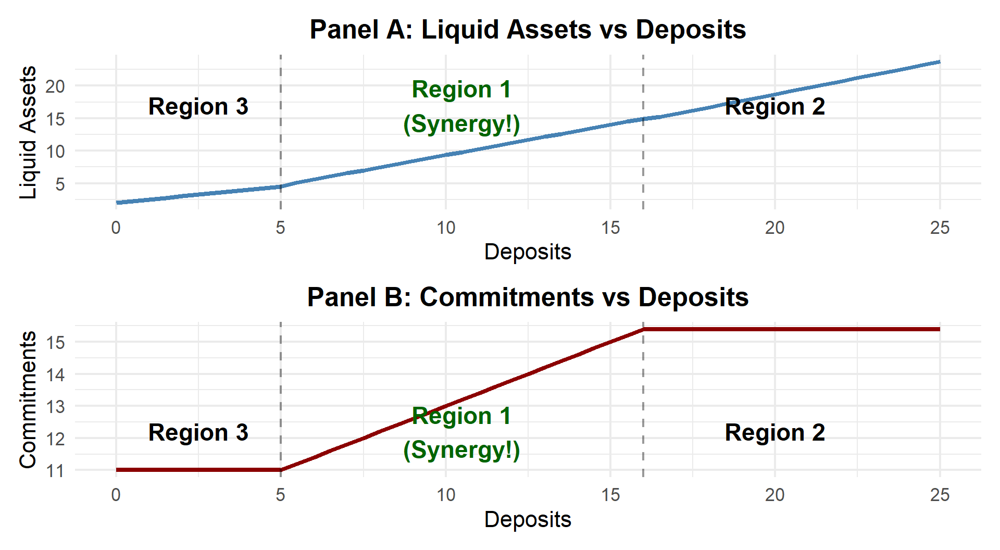

Main Predictions
Joint interpretation (IV logic):
Commitments related to liquid assets driven by deposits
Why Do Banks Both Take Deposits AND Make Loans?
Traditional View: Banks do two separate things:
The Big Question:
Why does one institution need to do both?
Think about it…
Policy Implications:
Core Issue
Is there a real synergy or just historical accident?
Both deposits and loan commitments are the same product:
The Unifying Concept
The provision of liquidity on demand
Once a commitment is extended:
It’s just a checking account with overdraft privileges!
Problem: Providing liquidity on demand is costly
Solution
Share the buffer stock costs across BOTH sides of balance sheet
Imagine a bank needs $20 buffer for potential deposit withdrawals
Scenario 1: Just deposit-taking
Scenario 2: Deposits + Commitments
The Key
As long as withdrawals and takedowns aren’t perfectly correlated,
the same buffer does double duty!
Medieval Banking (13th-14th century):
Money changers evolved from:
Senator Robert Morris (1785):
“By becoming stockholders in a bank, the merchants had pooled their cash to make it go further… when one does not want his money, it is earning his share of the dividend from another”
Deposits and overdrafts were explicitly seen as drawing on common liquidity!
Three dates: 0, 1, 2
Date 0:
Date 1:
Term Loans \(L\):
Liquid Assets \(S_0\):
Market Power: What does \(r_L < 0\) mean?
Why are liquid assets costly (\(\tau > 0\))?
Deposits \(D_0\):
External Finance \(e_0\), \(e_1\):
Loan Commitments \(C\):
Correlation Parameter
\(\rho\) = prob(\(\omega = 1 | z = 1\))
Date 0: \[L + S_0 = D_0 + e_0\]
Date 1: \[L + S_1 + zC = D_0(1-\omega) + e_0 + e_1\]
where \(S_1 \geq 0\) (can’t short liquid assets)
External Finance Need (Date 1)
\[e_1 = \max[zC + \omega D_0 - S_0, 0]\]
Maximize: \[E\{rL + fC + izC + (i-\tau)S_0 + iS_1 - 2ie_0 - ie_1 - \alpha e_1^2/2\}\]
Key Trade-offs:
Liquid Assets
\[\tau = -\frac{\alpha}{2}\frac{dE(e_1^2)}{dS_0}\]
Marginal cost of holding liquidity = Marginal benefit of reduced external finance
Commitments
\[f + Cf_C = \frac{\alpha}{2}\frac{dE(e_1^2)}{dC}\]
Marginal revenue from commitments = Marginal cost of increased external finance
The solution depends on how \(S_0^*\) compares to \(C^*\) and \(D_0\):
| Region | Condition | External Finance |
|---|---|---|
| 1 | \(S_0^* \leq \min(C^*, D_0)\) | 3 out of 4 states |
| 2 | \(C^* \leq S_0^* \leq D_0\) | Only if both shocks |
| 3 | \(D_0 \leq S_0^* \leq C^*\) | Only if both shocks |
| 4 | \(S_0^* \geq \max(C^*, D_0)\) | Fully self-insured |
When \(S_0^* \leq \min(C^*, D_0)\):
\[S_0^* = \frac{C^* + D_0 - 2(\tau/\alpha)}{2-\rho}\]
\[f + C^*f_C = \frac{\alpha}{4-2\rho}[(2\rho - \rho^2 - 1)D_0 + (1-\rho)C^* + 2(\tau/\alpha)]\]
Taking derivative: \[\frac{dC^*}{dD_0} = \frac{\alpha(1-\rho)^2/(4-2\rho)}{d^2(fC)/dC^2 - \alpha(1-\rho)/(4-2\rho)} > 0\]
if \(\rho < 1\)
Simple Example:
Now add $20 commitment business:
More generally (any \(\rho < 1\))
Region 3: \(D_0 \leq S_0^* < C^*\)
\[f + C^*f_C = \tau\]
Commitment level independent of deposits!
Why?
Parameters: \(f(C) = 1 - 0.025C\), \(\rho = 0.5\), \(\alpha = 0.1\), \(\tau = 0.45\)

Prediction 1 (Across institution types)
Banks will offer relatively more commitments than other lenders
Prediction 2 (Within banks - liquid assets)
\[\frac{\partial (\text{Liquid Assets})}{\partial (\text{Transactions Deposits})} > 0\]
Prediction 3 (Within banks - commitments)
\[\frac{\partial (\text{Commitments})}{\partial (\text{Transactions Deposits})} > 0\]
Joint interpretation (IV logic):
Commitments related to liquid assets driven by deposits
Extension to Term Lending
Model focuses on commitments, but there’s a natural spillover to term loans
The Logic:
Prediction Beyond the Core Model
Banks’ term lending should be disproportionately tilted toward customers who are heavy users of commitments
Example: Small firm with volatile working capital needs - Heavy user of credit lines → Bank learns about firm - Also more likely to get plant/equipment loans from banks (vs. finance companies)
Other explanations for deposits + lending:
This Paper’s Distinctive Contribution
Diversification across BOTH sides of balance sheet
National Survey of Small Business Finances (1993)
Key Variables:
Lines of Credit (% of lending):
| Institution Type | Unsecured | Secured | Total Lines |
|---|---|---|---|
| Banks/S&Ls | 31% | 39% | 70% |
| Finance Companies | 5% | 45% | 51% |
| Insurance Companies | 11% | 5% | 16% |
Key Finding
Banks dominate unsecured commitment lending!
“Where do you first look for unexpected short-term credit?”
Even relative to market share:
Important
Banks are THE source for unexpected liquidity needs
Call Reports (1992-1996)
Why time-average?
DEPRAT: \(\dfrac{\text{Transactions deposits}}{\text{Total deposits}}\)
LIQRAT: \(\dfrac{\text{Cash + Securities + Fed Funds}}{\text{Assets}}\)
SECRAT: \(\dfrac{\text{Securities + Fed Funds}}{\text{Assets}}\)
COMRAT: \(\dfrac{\text{Commitments}}{\text{Commitments + Loans}}\)
Controls:
| All Banks | Large | Medium | Small | |
|---|---|---|---|---|
| N | 9,262 | 100 | 500 | 8,662 |
| LIQRAT | 0.401 | 0.313 | 0.369 | 0.404 |
| DEPRAT | 0.281 | 0.293 | 0.263 | 0.282 |
| COMRAT | 0.078 | 0.260 | 0.134 | 0.075 |
Patterns:
Dependent Variable: LIQRAT = (cash + securities) / assets
| All Banks | Large | Medium | Small | |
|---|---|---|---|---|
| Coef. on DEPRAT | 0.227*** | 0.313*** | 0.105* | 0.235*** |
| (t-stat) | (16.62) | (2.94) | (1.82) | (16.67) |
| Explan. Power | 0.172 | 0.309 | 0.084 | 0.177 |
Interpretation (All Banks)
Dependent Variable: COMRAT = commitments / (commitments + loans)
| All Banks | Large | Medium | Small | |
|---|---|---|---|---|
| Coef. on DEPRAT | 0.116*** | 0.232*** | 0.160*** | 0.113*** |
| (t-stat) | (20.21) | (3.35) | (5.80) | (19.35) |
| Explan. Power | 0.181 | 0.207 | 0.242 | 0.188 |
Interpretation
Concern
Maybe high loans → mechanically ↓ COMRAT and ↓ DEPRAT?
Solution: Look at C&I division separately
Logic (à la Lamont 1997)
Dependent Variable: CICOMRAT (C&I commitments / C&I business)
Sample: 4,257 banks with C&I loans = 10-50% of total
| All Banks | Large | Medium | Small | |
|---|---|---|---|---|
| Coef. on DEPRAT | 0.209*** | 0.389*** | 0.406*** | 0.198*** |
| (t-stat) | (9.64) | (2.62) | (4.39) | (8.80) |
| Explan. Power | 0.127 | 0.283 | 0.246 | 0.128 |
Important
Results robust to endogeneity concerns!
Even looking at one small lending division, the relationship holds
Banks’ Advantage in Hedging Liquidity Risk
Core Finding:
Banks are a “safe haven” during market-wide liquidity shocks
When CP markets freeze:
Simultaneously:
The Natural Hedge
The very event that triggers loan demand (commitment takedowns) also triggers deposit inflows
→ Banks receive cheap funding exactly when they need it most!
How this extends KRS (2002):
Tip
Implication: The synergy is even more powerful than KRS modeled
Managing Bank Liquidity Risk
Core Finding:
The deposit-commitment synergy is a risk-management hedge
Empirical Approach:
Key Results:
How this extends KRS (2002):
KRS (2002) approach:
Finding: Banks with more deposits hold more commitments
GSS (2009) approach:
Finding: Deposit-commitment synergy reduces systematic risk
Key Insight
Transactions deposits aren’t just a funding source—they’re a liquidity risk insurance policy for commitment lending
The “double duty” buffer in KRS actually shows up as lower risk in market prices
A Crisis of Banks as Liquidity Providers
Core Finding:
During 2007-2009, the KRS synergy strained and nearly broke
The “Double Squeeze”:
How this qualifies KRS (2002):
The Synergy is Real but Conditional
When KRS works:
Examples: - 1998 LTCM crisis - Normal CP market stress
When KRS fails:
Example: - 2007-2009 Financial Crisis
Critical Insight
KRS synergy requires banking sector credibility. Without it, deposits and commitments become positively correlated risks rather than a hedge
Survived 2008 only via massive government intervention
Core Insight from KRS (2002)
Deposits and loan commitments are both forms of liquidity provision
Synergy from sharing buffer stock of liquid assets
Key Empirical Findings:
From Gatev & Strahan (2006)
Validation & Enhancement
From Gatev, Schuermann & Strahan (2009)
Market-Based Evidence
From Acharya & Mora (2015)
The Boundary Condition
The Refined View
The deposit-commitment synergy is real, powerful, but conditional
Works when banking sector credible; fails when bank solvency questioned
Model Limitations (KRS 2002)
Empirical Limitations
KRS (2002): - Cross-sectional data (1993) → Can’t establish causality definitively - IV approach clever but relies on strong assumptions - Doesn’t directly observe \(\rho\) (the correlation)
Extension papers: - G&S (2006, 2009): Focused on specific crisis episodes (CP market freezes) - A&M (2015): One crisis (2007-09) → Generalizability?
1. What triggers the regime shift?
2. Optimal bank structure?
3. International evidence?
4. Real-time risk management:
5. Global banking complications:
6. COVID-19 as a natural experiment:
Unresolved Policy Questions
For Regulators: - How to incorporate correlation risk into stress tests? - Should liquidity coverage ratios be state-dependent? - Optimal capital requirements given synergy benefits and tail risks?
For Central Banks: - How does synergy affect monetary policy transmission? - Design of emergency liquidity facilities to support (not replace) synergy? - Communication strategies to maintain banking sector credibility?
For Macroprudential Policy: - Should commitment exposure limits vary with deposit funding? - How to prevent synchronized correlation shifts across banks? - Role of countercyclical buffers in preserving synergy?
1. Economic Efficiency
Banks’ combination of deposits and commitments reflects real synergy, not just historical accident or regulatory artifact
2. State-Dependent Performance
The synergy is conditional on market perceptions of banking sector health
3. Regulatory Challenge
Policy must balance competing objectives:
Implication: Not a binary choice (narrow banking vs. status quo), but nuanced regulation recognizing both benefits and risks
Questions?
The institutional form of commercial banking is neither purely efficient nor purely fragile—it’s both, and which dominates depends on context.
Main Paper:
Kashyap, Anil K., Raghuram Rajan, and Jeremy C. Stein. 2002. “Banks as Liquidity Providers: An Explanation for the Coexistence of Lending and Deposit-Taking.” Journal of Finance 57(1): 33-73.
Extension Papers:
Gatev, Evan, and Philip E. Strahan. 2006. “Banks’ Advantage in Hedging Liquidity Risk: Theory and Evidence from the Commercial Paper Market.” Journal of Finance 61(2): 867-892.
Gatev, Evan, Til Schuermann, and Philip E. Strahan. 2009. “Managing Bank Liquidity Risk: How Deposit-Loan Synergies Vary with Market Conditions.” Review of Financial Studies 22(3): 995-1020.
Acharya, Viral V., and Nada Mora. 2015. “A Crisis of Banks as Liquidity Providers.” Journal of Finance 70(1): 1-43.
Related Literature:
Calomiris, Charles W., and Charles M. Kahn. 1991. “The Role of Demandable Debt in Structuring Optimal Banking Arrangements.” American Economic Review 81(3): 497-513.
Diamond, Douglas W., and Raghuram G. Rajan. 2001. “Liquidity Risk, Liquidity Creation, and Financial Fragility: A Theory of Banking.” Journal of Political Economy 109(2): 287-327.
Lamont, Owen. 1997. “Cash Flow and Investment: Evidence from Internal Capital Markets.” Journal of Finance 52(1): 83-109.
FIN 7650 | Presenter: Gajendra Choudhary